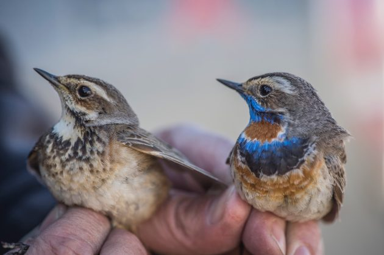

🕊️ Rare Bird Species: Voices on the Brink
🐦 Fragile Feathers of Biodiversity
Birds are bioindicators—sensitive to environmental shifts long before humans notice. From songbirds to raptors, each rare species lost is a symphony silenced and a warning unheard.
Habitat destruction, climate shifts, and illegal trapping have pushed hundreds of avian species onto the IUCN endangered list.
“A rare bird lost is more than extinction—it’s a broken link in our ecosystem.”
📡 How Birds Are Monitored
Acoustic recorders, satellite tags, and even bird-call recognition apps help ornithologists track migration routes, breeding patterns, and nesting zones.

📸 A researcher tags a Philippine eagle with a lightweight GPS tracker
🧬 Saving Genes, Not Just Species
Modern labs are preserving the genetic diversity of rare birds. DNA banks, captive breeding, and genome mapping provide insurance in case of population collapse.
📊 Global Bird Crisis (2025 Snapshot)
| Species | Estimated Left | Region | Main Threat |
|---|---|---|---|
| California Condor | 340 | North America | Lead poisoning, habitat loss |
| Forest Owlet | 200–250 | India | Deforestation |
| Imperial Amazon | 150 | Dominica | Hurricanes, poaching |
🦉 Local Voices in Bird Rescue
Rural watchers, indigenous guides, and birding communities are central to saving birds. In Peru and Nepal, youth volunteers use binoculars and smartphones to log rare sightings for global conservation databases.
Education, empathy, and tech tools are turning watchers into guardians.